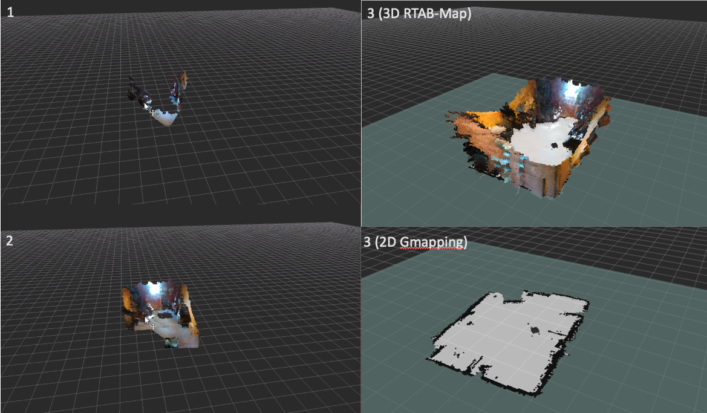
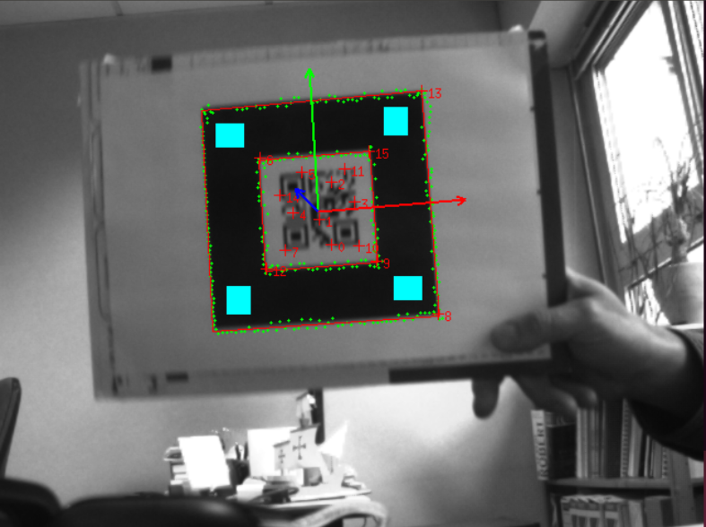
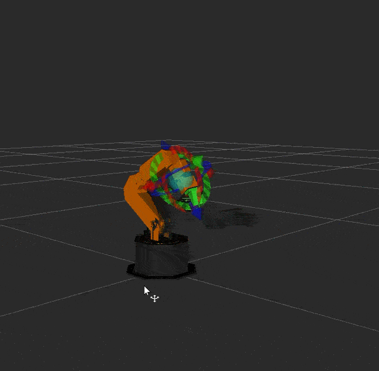
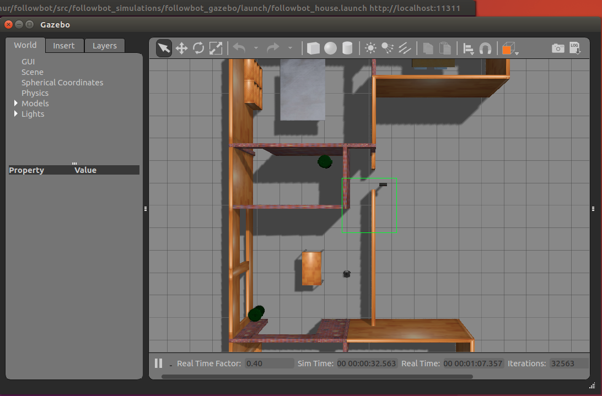
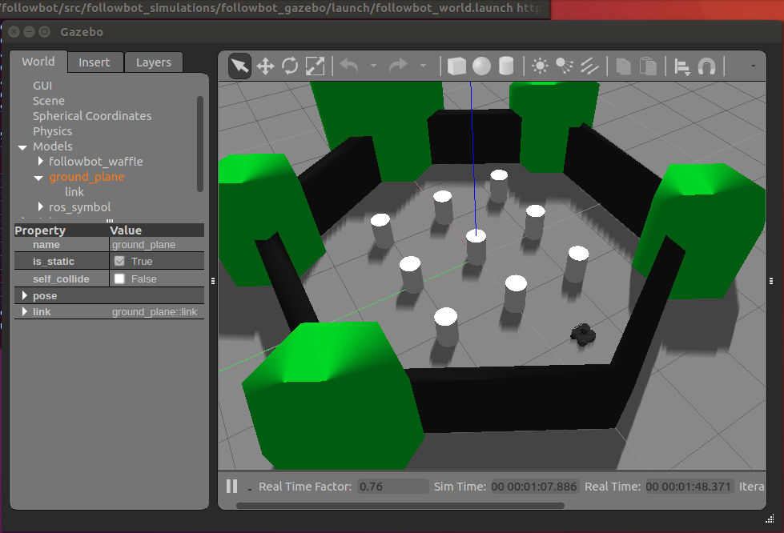

ROBOTIC TEST BED FOR COLLABORATIVE IMAGING USING MACHINE LEARNING
Uses: C++, Python, ROS, Gazebo, Rviz
This project’s goal is to create a collaborative robot that is designed to keep track of packages in a warehouse.
With the rise of online shopping, it is becoming more and more important to be able to organize everyone’s individual packages. Lost packages have become a large problem as employees have misplaced many packages due to mistakes or poor organization and these packages then need to be replaced. Overall, these mistakes have lead to a loss of millions in most inventory. This robot will solve this problem by creating a map of the warehouse and being able to read barcodes. The robot will be mainly built from a TurtleBot 3 kit with additional hardware including a RealSense Camera, Intel NUC, and a Widowx ARM. The robot will also be using the operating system ROS and be programmed using Python and C.

Description
This project requires us to create a test bed that will test collaborative interfaces, improve the SLAM performance using accelerators integration, and implement Robot-Training Mode using Vision. Testing a comprehensive collaborative interface will allow us to make sure we understand what is going on in the test and how the robot AI preforms. In order to keep track of packages, we will use the camera to read the barcodes of packages. This will allow us to identify the package and record it’s location. SLAM performance allows the robot to map it’s environment Using accelerator integration allows better prediction of moving objects. Vision is software that allows customizable applications, rich graphical reports, and database management. This will allow us to accurately portray how a robot will act by creating our own program. Overall, completing this project will allow a much more in depth way to test future robots and make sure they are qualified for consumer use.
Scope
- Testing Collaborative Inference (Like Multiple Mobile Cameras)
- Read barcodes using the camera and not the package’s location
- Improvement in the SLAM performance using Accelerators integration to ROS
- Implementing Robot-Training Mode using Vision
- Creating a simulation using Gazebo
- Building a prototype to keep track of packages using barcodes and display collaborative robots
HARDWARE SPECIFICATION
The table below defines the minimum hardware requirements for Human Follower project. The hardware is necessary to create a 2D/3D map of an unknown environment and find the barcode of lost package.
| Items | FollowBot |
| Robot Chasis | TurtleBot3 Waffle |
| Computer | Intel NUC; |
| Camera | Intel RealsenseTM D415 |
| Laser Distance Sensor | 360 Laser Distance Sensor LDS-01 |
| Actuator | XM430-W210 |
| IMU |
Gyroscope 3 Axis Accelerometer 3 Axis Magnetometer 3 Axis |
| Battery | 185Wh/50000mAh(Max.130W) |
IMAGES

3D Map

Mapped Environment

Navigation

Barcode
Testing in Simulation:


